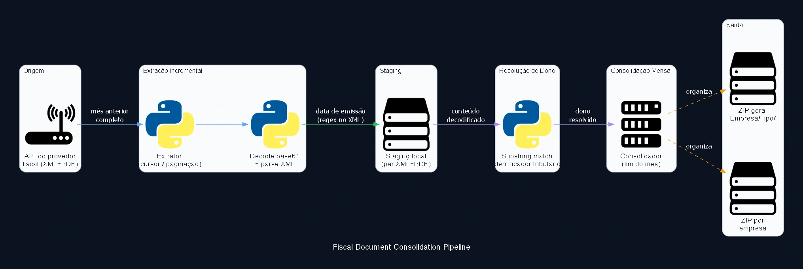

Fiscal Document Consolidation Pipeline
A monthly incremental pipeline that resolves the owning legal entity for each fiscal document by substring-matching the entity's tax identifier inside the raw XML content, instead of trusting an explicit reference tag, a resilience choice that tolerates inconsistent tagging at the source. The job downloads the XML+PDF pair for each document from the fiscal document provider's API, decodes base64-wrapped payloads when needed, and filters strictly by the real issuance date parsed from the XML itself, not the record's creation date in the API.

Case Study
Problem
Fiscal documents arrive from the API already as XML (sometimes base64-wrapped), but the payload doesn't reliably carry an explicit, normalized reference to which entity in the group owns that document; counterpart tagging at the source is inconsistent across issuers. Without a robust way to resolve ownership, per-entity consolidation turns into a manual, file-by-file triage process every month.
Solution
Instead of depending on a reference tag (which can be missing, empty, or follow a different convention per issuer), ownership resolution scans the raw decoded XML content for a substring match of each registered entity's tax identifier; the owner is the first entity whose identifier appears literally in the document text. This choice tolerates inconsistent tagging at the source without breaking the pipeline. Extraction runs incrementally (the full previous month, computed automatically), pages through the API's native cursor/continuation-URL, and filters strictly by the real issuance date parsed via regex from the XML itself, not the record's creation date, which can diverge. Each document's PDF and XML are downloaded as a pair and written to local staging; at month end, consolidation decodes every XML, resolves ownership by substring match, and writes two artifacts: one combined ZIP with every document organized under Entity/DocumentType/, and one per-entity ZIP with the same slice. Staging is cleaned up after every successful consolidation, and the final report goes out by email.
Impact
Fully automated monthly fiscal document consolidation, with no manual per-entity triage step, even with inconsistent counterpart tagging at the source. The substring-match mechanism removes the dependency on a specific tag the source doesn't always populate correctly, making the pipeline resilient to format drift on the provider's side.
Need to consolidate fiscal documents across entities without relying on a reference tag? Let's design that resolution for your context.
Discuss your case